Importing required libraries
#import dependencies
import numpy as np
import pandas as pd
import os
from datetime import datetime
import seaborn as sns
import matplotlib.pyplot as plt
#from imblearn.over_sampling import SMOTE
#!pip install fancyimpute
#from fancyimpute import IterativeImputer
from sklearn.mixture import GaussianMixture
import warnings
warnings.filterwarnings("ignore")
pd.set_option('display.max_columns',None)
from sklearn.metrics import accuracy_score,f1_score,recall_score,precision_score,confusion_matrix
from sklearn.model_selection import train_test_split
from sklearn.ensemble import RandomForestClassifier
# from sklearn.inspection import permutation_importance
from sklearn.metrics import accuracy_score
from sklearn.preprocessing import LabelEncoder
from sklearn.model_selection import StratifiedKFold
import tensorflow as tf
Importing data
# load dataset
weatherdata = pd.read_csv('/kaggle/input/formulaaihackathon2022/weather.csv')
Exploratory Data Analysis (EDA) and Pre-Processing
#copy of wether data
df = weatherdata.copy()
Dropping irrelavant columns
#drop columns(either based on variance or outliers)
irrelavant_features = ['M_PACKET_FORMAT', 'M_GAME_MAJOR_VERSION', 'M_GAME_MINOR_VERSION', 'M_PACKET_VERSION',
'M_PACKET_ID', 'M_FRAME_IDENTIFIER', 'M_SECONDARY_PLAYER_CAR_INDEX', 'M_BRAKING_ASSIST', 'M_SESSION_LINK_IDENTIFIER',
'M_PIT_RELEASE_ASSIST', 'M_ZONE_START', 'M_ZONE_FLAG', 'M_GAME_PAUSED', 'M_SLI_PRO_NATIVE_SUPPORT',
'M_SAFETY_CAR_STATUS', 'M_ERSASSIST','M_FORMULA', 'M_PIT_ASSIST', 'M_GEARBOX_ASSIST', 'M_SPECTATOR_CAR_INDEX', 'M_DYNAMIC_RACING_LINE_TYPE',
'M_PIT_SPEED_LIMIT', 'M_NETWORK_GAME', 'M_STEERING_ASSIST', 'M_IS_SPECTATING', 'M_DYNAMIC_RACING_LINE',
'M_DRSASSIST', 'M_NUM_MARSHAL_ZONES','GAMEHOST','Unnamed: 58']
df.drop(columns=irrelavant_features,inplace=True)
#split the feats into discrete and continous
cont_feats = [feat for feat in df.columns if df[feat].nunique()>50]
cat_feats = [feat for feat in df.columns if feat not in cont_feats]
Data Wrangling
def missing_values_table(df):
zero_val = (df == 0.00).astype(int).sum(axis=0)
mis_val = df.isnull().sum()
mis_val_percent = 100 * df.isnull().sum() / len(df)
mz_table = pd.concat([zero_val, mis_val, mis_val_percent], axis=1)
mz_table = mz_table.rename(
columns = {0 : 'Zero_Values', 1 : 'Missing_Values', 2 : 'Missing_Values%'})
mz_table['Sum_Zero_Plus_Missing_Values'] = mz_table['Zero_Values'] + mz_table['Missing_Values']
mz_table['%_Sum_Zero_Plus_Missing_Values'] = 100 * mz_table['Sum_Zero_Plus_Missing_Values'] / len(df)
mz_table['Data Type'] = df.dtypes
mz_table = mz_table[
mz_table.iloc[:,1] != 0].sort_values(
'Missing_Values%', ascending=False).round(1)
print ("Your selected dataframe has " + str(df.shape[1]) + " columns and " + str(df.shape[0]) + " Rows.\n"
"There are " + str(mz_table.shape[0]) +
" columns that have missing values.")
#mz_table.to_excel('D:/sampledata/missing_and_zero_values.xlsx', freeze_panes=(1,0), index = False)
return mz_table
missing_values_df = missing_values_table(df)
missing_values_df
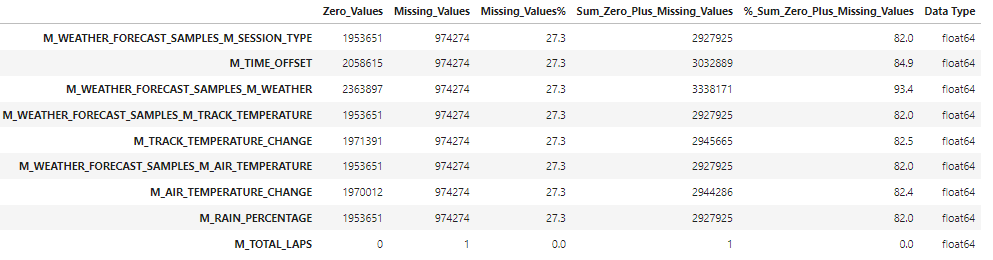
Since we have 27.3% of missing values in 8 Features, we shall use Forward Fill to Fill the values. The reason for using forward fill is due to heavy existence of duplicates
#fill null values with ffill or agregated mean by date and time
df = df.fillna(method = 'ffill')
df['TIMESTAMP'] = df['TIMESTAMP'].apply(lambda x:datetime.fromtimestamp(x))
df['date'] = df['TIMESTAMP'].dt.date
df['hour'] = df['TIMESTAMP'].dt.hour
df['min'] = df['TIMESTAMP'].dt.minute
df['sec'] = df['TIMESTAMP'].dt.second
#sort values by date
df.sort_values(by=['TIMESTAMP'],inplace=True)
#copy of df
dfcopy = df.copy()
#aggregate df by M_SESSION_UID - M_SESSION_TIME - M_TIME_OFFSET
df_agg = df.groupby(['M_SESSION_UID','M_SESSION_TIME','M_TIME_OFFSET']).mean().reset_index()
df_agg
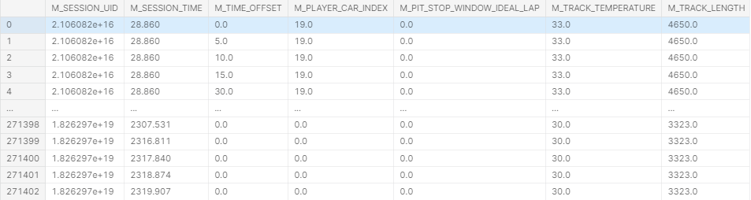
Using Random Forest Classifier to predict the weather accuracy using the Target 'M_WEATHER'
target = 'M_WEATHER'
# df_agg = df_agg.drop(columns=['date'])
X = df_agg.drop(columns=target)
y = df_agg[target]
X_train, X_test, y_train, y_test = train_test_split(X, y,shuffle=False,random_state=42)
#random forest classifier
rf = RandomForestClassifier(n_estimators=100, random_state=42)
rf.fit(X_train, y_train)
#predict for train and validation data
pred_train = rf.predict(X_train)
pred_test = rf.predict(X_test)
def metrics_print(actual,predicted, data_set):
print(f'{data_set}')
print('ACCURACY',accuracy_score(actual,predicted))
print('RECALL', recall_score(actual,predicted,average='weighted'))
print('PRECISION',precision_score(actual,predicted,average='weighted'))
print('F1-SCORE',f1_score(actual,predicted,average='weighted'))
metrics_print(y_train,pred_train,'train')
metrics_print(y_test,pred_test,'test')
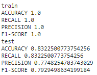
The accuracy of the Target Variable 'M_WEATHER' is 83.2% which is good.
discrete_feats = [col for col in df_agg.columns if df_agg[col].nunique() <25]
cont_feats = [col for col in df_agg.columns if col not in discrete_feats]
#discrete features
f, ax = plt.subplots(4, 4, figsize = (15 , 15))
axx = ax.flatten()
for index, col in enumerate(discrete_feats):
df_agg[ col].value_counts().plot.pie(autopct = '%1.1f%%', ax = axx[index])
#bivariate analysis of categorical features with target
f, ax = plt.subplots(5, 3, figsize = (20,20))
axx = ax.flatten()
for index, col in enumerate(cont_feats):
# plt.figure(figsize=(15,8))
sns.distplot(df_agg[col],ax=axx[index])
# plt.show()
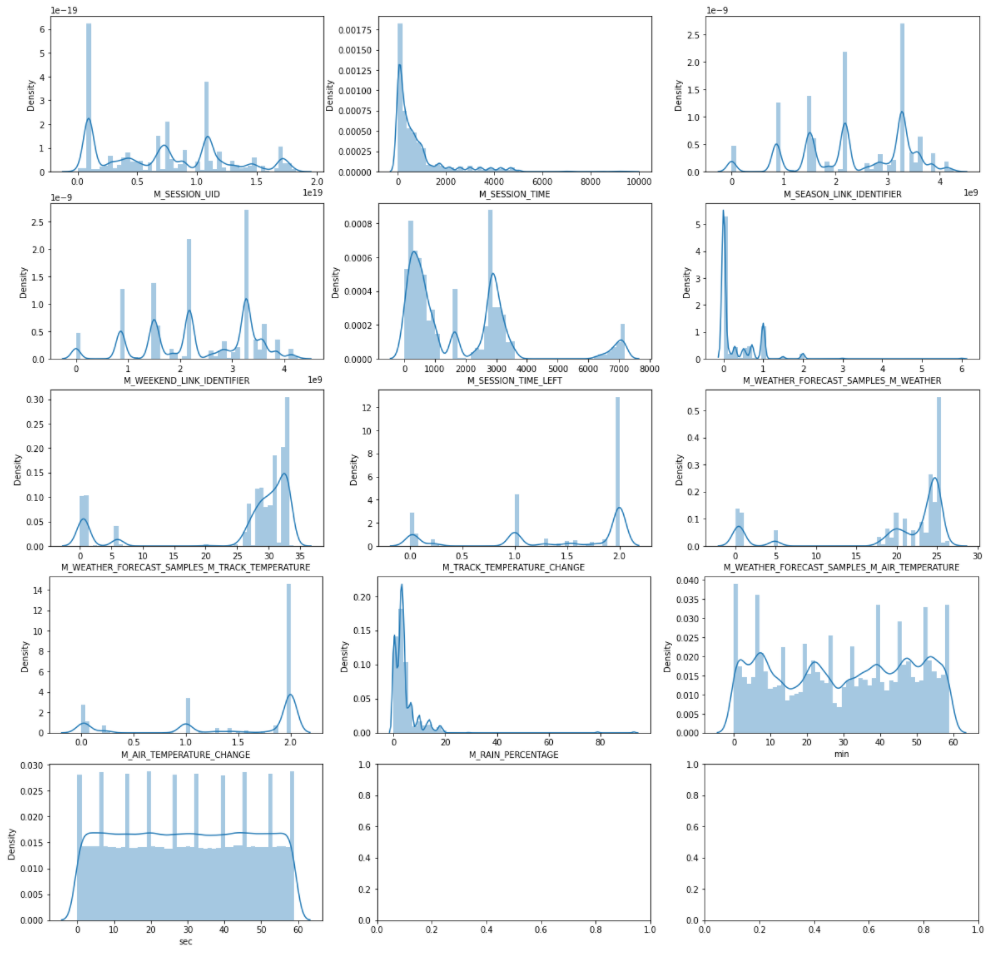
Feature Engineering
#mean TRACK TEMP AND AIR TEMP per session id and hour
feats_gr = ['M_SESSION_UID','hour']
feats_agg = ['M_TRACK_TEMPERATURE','M_AIR_TEMPERATURE']
dftemp = df_agg.groupby(feats_gr)[feats_agg].agg([np.mean])
cols = dftemp.columns
dftemp.columns = ['_SessionID_Hour_'.join(c) for c in cols]
dftemp.reset_index(inplace = True)
# join df with df_agg
df_agg = df_agg.merge(dftemp, on = feats_gr, how = 'left')
#drop features by variance
dropfeats = ['M_PIT_STOP_WINDOW_IDEAL_LAP','M_FORECAST_ACCURACY']
# session features
sess_feats = ['M_SESSION_UID','M_SESSION_TYPE','M_SESSION_TIME','M_SESSION_TIME_LEFT','M_SESSION_DURATION']
Gaussian Mixture Model (GMM) for Target Recalibration
df.M_WEATHER.value_counts()
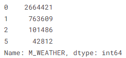
Based on the value counts of Target Variable 'M_WEATHER', there are missing values [3,4] which would cause a misleading machine learning prediction.
- To overcome such a crisis, we re-calibrate the Target Variable by using GMM Classification Model and create a new Target Variable 'WEATHER_CLASS'
- Top 3 highly correlavant features are taken and GMM Classification Model is ran on them to get the GMM_CLASS with 6 WEATHER Classes.
#get high correlated features for GMM model
highcorrelationfeats = ['M_AIR_TEMPERATURE', 'M_TRACK_TEMPERATURE_SessionID_Hour_mean','M_TRACK_TEMPERATURE']
tempdf = df_agg[highcorrelationfeats]
#Fit data using GMM
gmm = GaussianMixture(n_components=6, random_state = 1)
gmm.fit(tempdf)
tempdf['GMM_CLASS'] = gmm.predict(tempdf)
tempdf
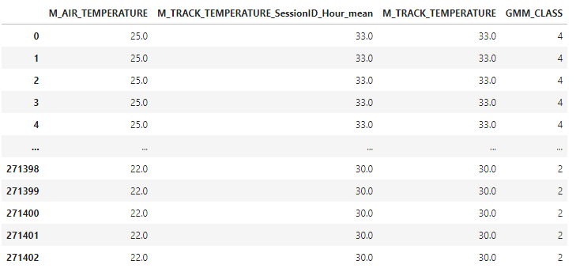
tempdf['GMM_CLASS'].value_counts()
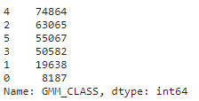
tempdf.groupby(['GMM_CLASS'])['M_TRACK_TEMPERATURE'].median().sort_values(ascending=False)
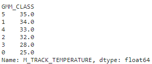
GMM_CLASS values are created with 6 values that are highly correlavant to the top 3 features ['M_AIR_TEMPERATURE', 'M_TRACK_TEMPERATURE_SessionID_Hour_mean','M_TRACK_TEMPERATURE']
fig = plt.figure(figsize = (5,5))
sns.set(style = 'whitegrid')
sns.barplot(df_agg.M_WEATHER, df_agg.M_TRACK_TEMPERATURE)
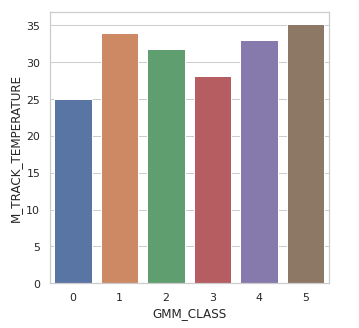
for feat in tempdf.columns:
sns.displot(data=tempdf, x=feat, hue=df_agg['M_WEATHER'],
kind='kde',palette=sns.color_palette('bright')[:4],height=4,aspect=2.2)
plt.show()
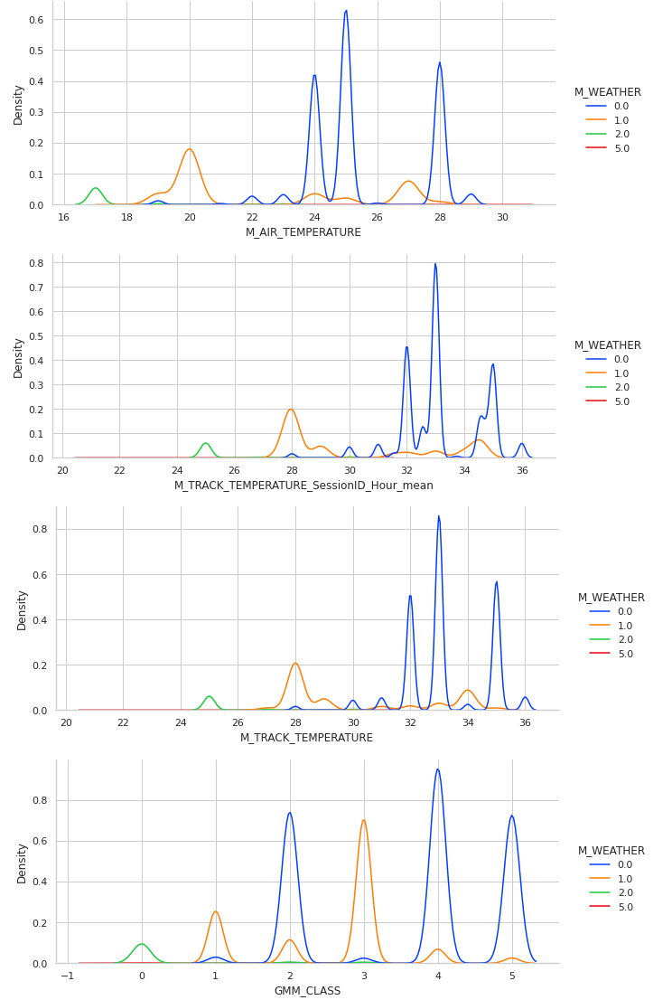
We compare the existing weather density distribution based on the highly correlated features to map the GMM_CLASS values.
#map gmm class
gmmlabel = list(tempdf.groupby(['GMM_CLASS'])['M_TRACK_TEMPERATURE'].median().sort_values(ascending=False).index.values)
print('GMM_CLASS:', gmmlabel)
weatherlabel = [0,1,2,3,4,5]
print('M_WEATHER:',weatherlabel)
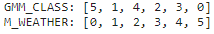
#map function to map GMM_CLASS to M_WEATHER
gmm_map = dict(zip(gmmlabel,weatherlabel))
print(gmm_map)
#map gmm class
df_agg['WEATHER_CLASS'] = tempdf['GMM_CLASS'].map(gmm_map)
df_agg['WEATHER_CLASS'].value_counts()
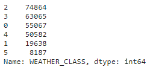
Random Forest Classifier to check the accuracy of the new Target Variable 'WEATHER_CLASS'
target = 'WEATHER_CLASS'
# df_agg = df_agg.drop(columns=['date'])
X = df_agg.drop(columns=['WEATHER_CLASS','M_WEATHER'])
y = df_agg[target]
X_train, X_test, y_train, y_test = train_test_split(X, y,shuffle=False,random_state=786)
#random forest classifier
rf = RandomForestClassifier(n_estimators=100, random_state=786)
rf.fit(X_train, y_train)
#predict for train and validation data
pred_train = rf.predict(X_train)
pred_test = rf.predict(X_test)
metrics_print(y_train,pred_train,'train')
metrics_print(y_test,pred_test,'test')
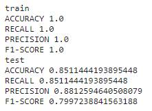
The accuracy of new Target Variable 'WEATHER_CLASS' is 85.1% and is better than the original target variable 'M_WEATHER' which is 83.2%.
con_df = pd.DataFrame(list(zip(y_test.values,pred_test)),columns=['y_Actual','y_Predicted'])
confusion_matrix = pd.crosstab(con_df['y_Actual'], con_df['y_Predicted'], rownames=['Actual'], colnames=['Predicted'])
print (confusion_matrix)
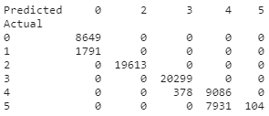
con_df.value_counts()
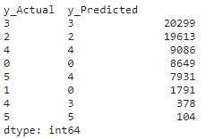
TabNet Classifier
Predicting Weather using TabNet Classifier Algorithm
from sklearn.metrics import accuracy_score
from sklearn.preprocessing import LabelEncoder
from sklearn.model_selection import StratifiedKFold
!pip install pytorch-tabnet
from pytorch_tabnet.tab_model import TabNetClassifier
cols = df_agg.columns.to_list()
cols.remove('WEATHER_CLASS')
cols.remove('M_WEATHER')
finaldf = df_agg.copy()
finaldf.drop(columns=['M_WEATHER'], inplace = True)
finaldf.columns
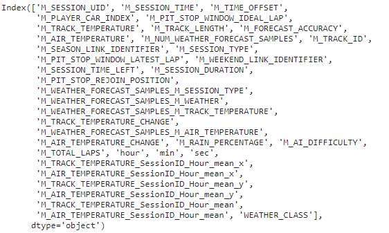
Split the data into train and test data sets with a 70:30 ratio
from sklearn.model_selection import train_test_split
training_data, testing_data = train_test_split(finaldf, test_size=0.3, random_state=25, shuffle = False)
print(f"No. of training examples: {training_data.shape[0]}")
print(f"No. of testing examples: {testing_data.shape[0]}")
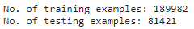
Drop Target Variable 'WEATHER_CLASS' for test data
test = testing_data.copy()
test.drop(columns=['WEATHER_CLASS'], inplace = True)
training_data.shape
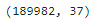
data = training_data.copy()
data.shape
final_pred_df = finaldf.copy()
final_pred_df.drop(columns=['WEATHER_CLASS'], inplace = True)
final_pred_df.shape
Fit and Tranform the TabNet Classifier Model
N_folds = 5
seeds = [455, 485, 659, 16, 5659]
data_preds = np.zeros((data.shape[0], 6))
test_preds = np.zeros((test.shape[0], 6))
final_preds = np.zeros((final_pred_df.shape[0], 6))
feature_importance = pd.DataFrame()
for seed in seeds:
print('---------------------------------------')
print('SEED : ', seed)
print('---------------------------------------')
data['fold'] = -1
skf = StratifiedKFold(n_splits=N_folds, shuffle=False, random_state=seed)
for f, (_, idxs) in enumerate(skf.split(data, data['WEATHER_CLASS'])):
data.loc[idxs, 'fold'] = f
for F in range(N_folds):
print('FOLD : ', F)
train = data[data['fold'] != F].reset_index(drop=True)
valid = data[data['fold'] == F].reset_index(drop=True)
model = TabNetClassifier(verbose=0,seed=42)
model.fit(X_train=train[cols].values, y_train=train['WEATHER_CLASS'].values,
eval_set=[(train[cols].values, train['WEATHER_CLASS'].values), (valid[cols].values, valid['WEATHER_CLASS'].values)],
eval_name=['train', 'valid'],
patience=5, max_epochs=100,
eval_metric=['accuracy'],
batch_size=1024, virtual_batch_size=256)
preds = model.predict_proba(valid[cols].values)
data_preds[data[data['fold'] == F].index] += preds
preds = model.predict_proba(test[cols].values)
test_preds += preds
preds = model.predict_proba(final_pred_df[cols].values)
final_preds += preds
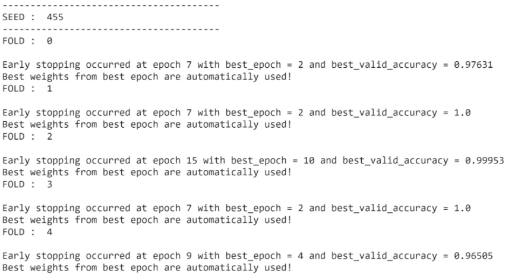
data_preds = data_preds / (len(seeds))
test_preds = test_preds / (len(seeds) * N_folds)
finalpred_avg= final_preds/ (len(seeds) * N_folds)
finaltestdf = final_pred_df.copy()
#predict the weather class prob
prob = finalpred_avg
finaltestdf['Weather_Prediction_Class_Probability'] = np.max(prob,axis=1)
#predict weather class
finaltestdf['Weather_Prediction_Class'] = np.argmax(prob,axis=1)
Multiclass Classification (TensorFlow)
Predict Weather using Multi-Class Classification (TensorFlow)
import tensorflow as tf
from tensorflow.keras.optimizers import Adam
from sklearn.preprocessing import StandardScaler
#copy of df_agg
dffinal = df_agg.copy()
#split data into target and features
X = df_agg.drop(columns=['M_WEATHER','WEATHER_CLASS'])
Y = df_agg['WEATHER_CLASS']
#scale X using standardscaler
std_scale = StandardScaler()
X_scaled = std_scale.fit_transform(X)
X_df = pd.DataFrame(X_scaled,columns=X.columns)
#train test split
X_train, X_test, y_train, y_test = train_test_split(X_df, Y,shuffle=False,random_state=42)
NN_model = tf.keras.models.Sequential([
tf.keras.layers.Input(shape=X.shape[1]),
tf.keras.layers.Dense(128, activation='relu'),
tf.keras.layers.Dropout(0.3),
tf.keras.layers.Dense(64, activation='relu'),
tf.keras.layers.Dropout(0.3),
tf.keras.layers.Dense(16, activation='relu'),
tf.keras.layers.Dense(6, activation='softmax') ])
NN_model.compile(Adam(lr = 0.01),
loss='sparse_categorical_crossentropy',
metrics=['accuracy'])
NN_model.fit(X_train,y_train,
validation_data=(X_test, y_test),
epochs=50, batch_size=10000, verbose=1,
)
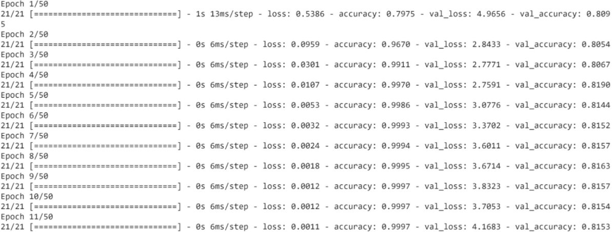
#predict the weather class prob
#prob = finalpred_avg
xnn_df = X.copy()
xnn_df['Weather_Prediction_Class_Probability'] = np.max(NN_model.predict(X))
#predict weather class
xnn_df['Weather_Prediction_Class'] = np.argmax(NN_model.predict(X))
xnn_df
NN_model.predict(X)
finaltestdf['Ensemble_weather_prob'] = (xnn_df['Weather_Prediction_Class_Probability'] + finaltestdf['Weather_Prediction_Class_Probability'])/2
finalpreddf = finaltestdf[['M_SESSION_UID','M_SESSION_TIME','M_TIME_OFFSET','Weather_Prediction_Class','Ensemble_weather_prob']]
#merge dfcopy with finalpreddf to get timestamp
df_sessid_time = dfcopy.drop_duplicates(subset=['M_SESSION_UID','TIMESTAMP'])
finaldfpred_with_timestamp = finalpreddf.merge(df_sessid_time[["M_SESSION_UID","M_SESSION_TIME",'TIMESTAMP']], on=["M_SESSION_UID","M_SESSION_TIME"])
finaldfpred_with_timestamp = finaldfpred_with_timestamp.drop(columns=['M_SESSION_TIME'])
#final output
finaldfpred_with_timestamp['Output'] = finaldfpred_with_timestamp.apply(lambda x:{x['M_TIME_OFFSET']:{'type':x['Weather_Prediction_Class'],x['Weather_Prediction_Class']:x['Ensemble_weather_prob']}},axis=1)
finaloutput = finaldfpred_with_timestamp.groupby(['M_SESSION_UID','TIMESTAMP'])['Output'].apply(lambda x:list(x)).reset_index()
finaloutput
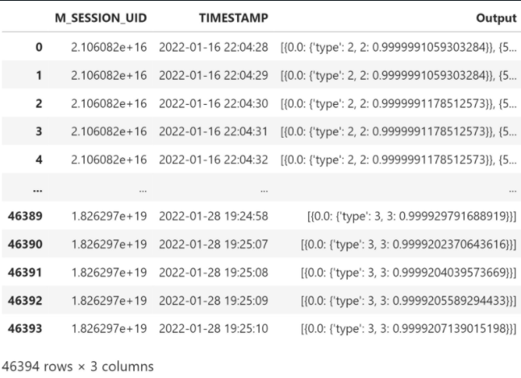
finaloutput.to_csv('FINAL_OUTPUT.csv')
NN_model.save('saved_model/my_model')